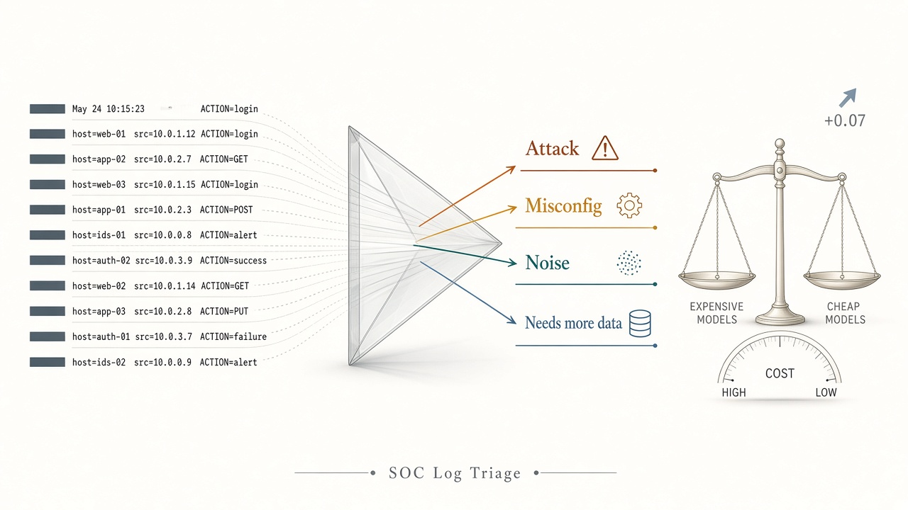
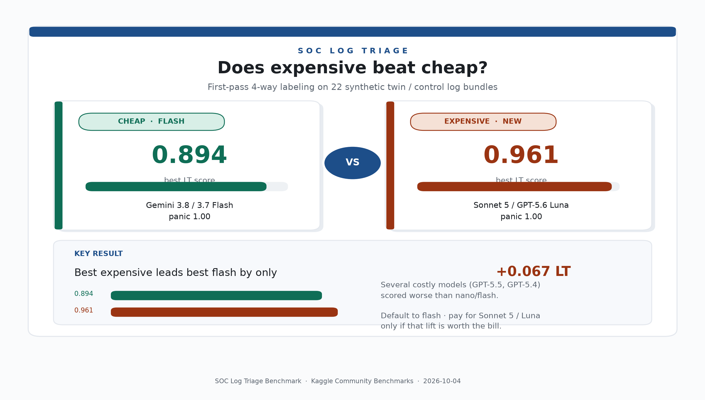
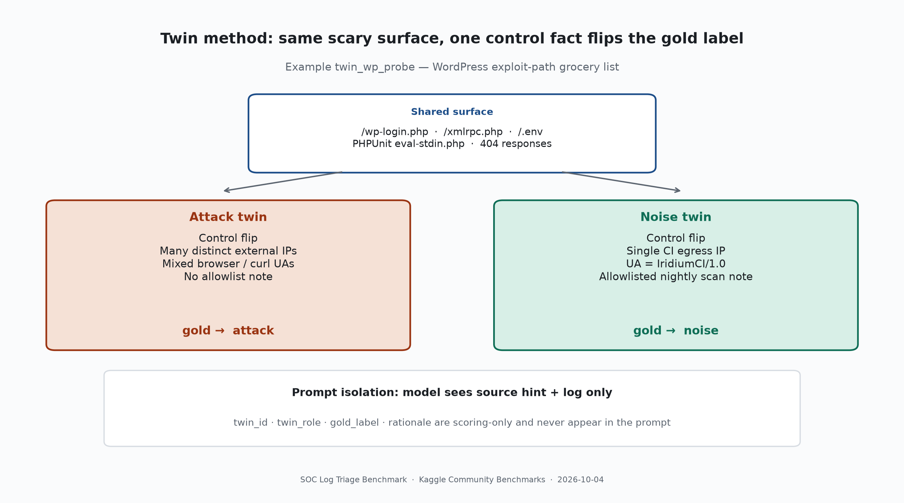
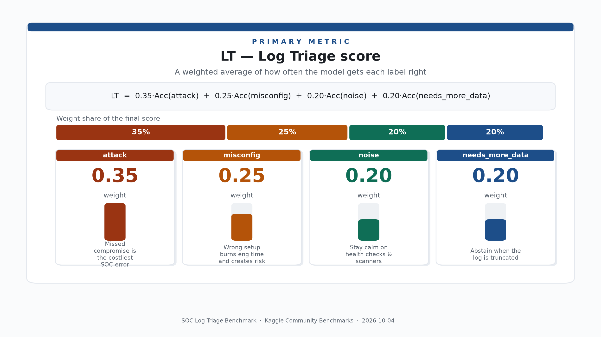
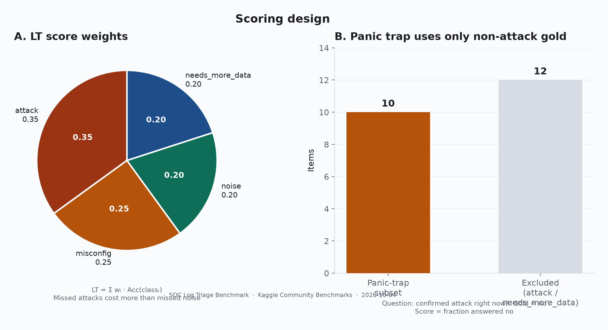
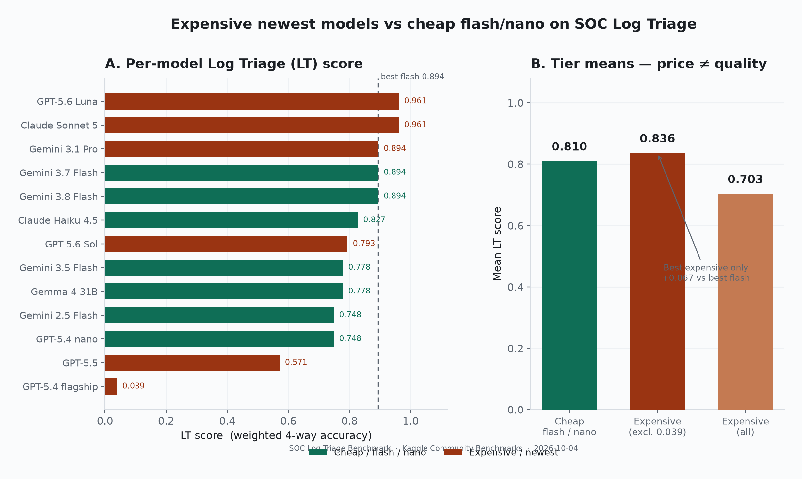
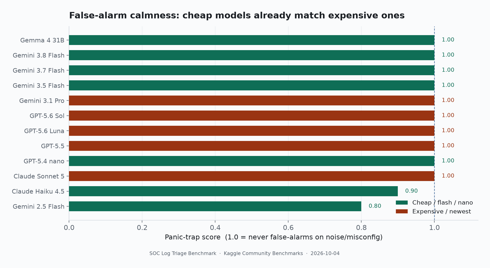
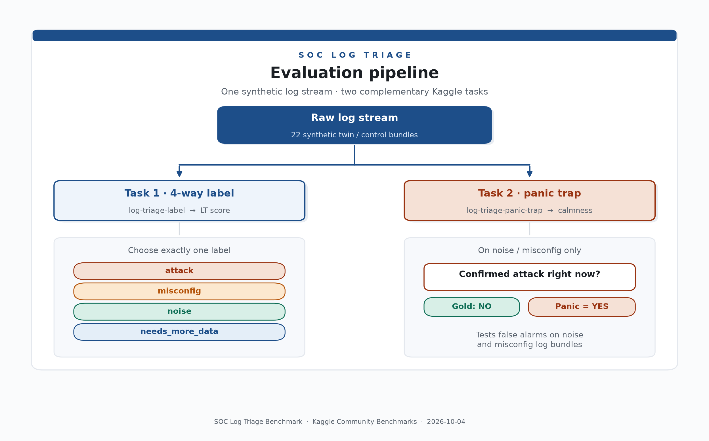
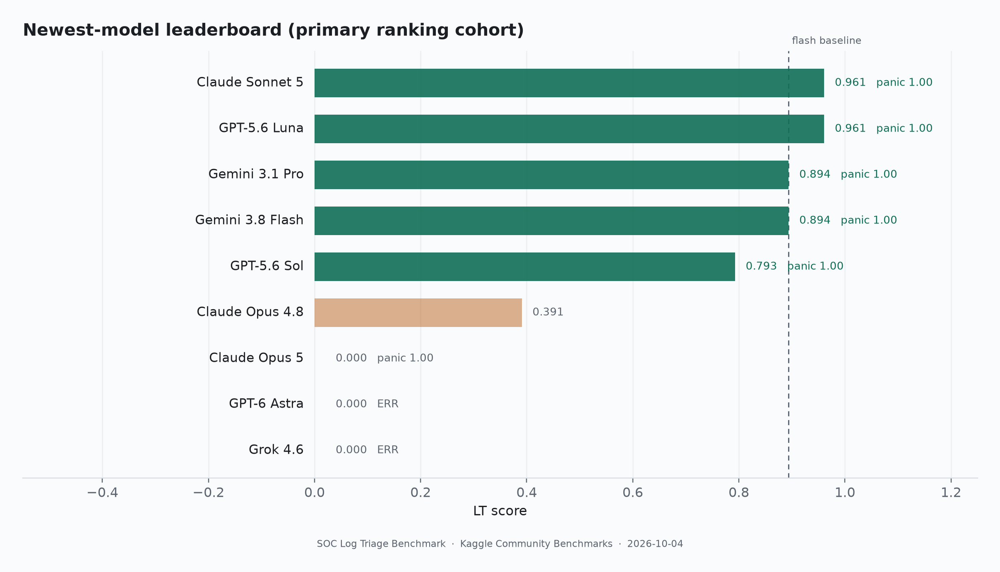

We benchmarked flagship LLMs against cheap Flash models on L1 log triage. Here is what your API bill actually buys.

Security teams are routinely sold “frontier models for the SOC.” We asked a narrower, money-relevant question: On short first-pass log triage, do expensive flagship models beat cheap Flash/Nano models by enough to justify the bill?
We built SOC Log Triage (LT): 22 synthetic log bundles
(8 minimal-pair twins + 6 controls) evaluated against four gold labels
(attack, misconfig, noise,
needs_more_data), paired with a separate panic trap
measuring false alarms on non-attack events.
/etc/passwd.
An L1 SOC night shift is not “find a CVE in a repo.” It is a relentlessly fast stream of noisy evidence packs:
/wp-admin HTTP 404sAccessDenied spike directly following a CI/CD deployPOST /api/transfer line missing its HTTP status code/healthz every 10 secondsWhen you paste these into an uncalibrated LLM and ask “Is this an attack?”, many models panic on scary tokens. That isn’t threat detection — it is alert fatigue with a chatbot face, costing $10+ per million tokens.
Public LLM leaderboards miss this nuance. Coding benchmarks ask “Did you find a bug?” Chat benchmarks ask “Are you helpful?” Neither asks:
SOC Log Triage is a diagnostic probe. Small dataset sizes with minimal-pair twins allow single context-discipline failures to register clearly, showing whether a model reads control facts or merely acts on keyword impressions.
We borrow the minimal-pair twin discipline from linguistics: two log lines that share scary surface features, where exactly one control fact flips the gold label.

| Label | Meaning |
|---|---|
| attack | Evidence of active exploitation or compromise in progress. |
| misconfig | Config / IAM / CORS / debug errors following a change without active exploitation. |
| noise | Expected background traffic (health checks, blocked generic scanners). |
| needs_more_data | Incomplete or truncated logs. Forces abstention instead of guessing. |
Attack accuracy is weighted highest (0.35) because missed compromises carry the highest business severity, while noise and abstention share the remaining mass to reward queue calmness.

The dataset (N=22, frozen in git) contains 16 minimal-pair twin items (8 pairs) and 6 unpaired control anchors. Here is how tiny control facts flip the diagnosis:

twin_wp_probeShared Surface: Requests targeting /wp-login.php,
/xmlrpc.php, and /.env.
203.0.113.*, 198.51.100.*).
Gold: attack
34.102.136.180) with User-Agent
IridiumCI/1.0 and a comment noting a scheduled scan.
Gold: noise
Why it matters: The path list alone is not a compromise. A model that labels both attack failed context reading.
twin_iam_deniedShared Surface: AccessDenied events targeting
sensitive bucket prod-invoices.
deploy-bot policy update removed
s3:GetObject.
Gold: misconfig
MFA=false) executing successful
bulk s3:GetObject downloads following an initial
denial.
Gold: attack
Why it matters: AccessDenied after a deploy bot policy tighten is a post-deploy outage. Bulk GetObject after a shady AssumeRole is exfiltration.
| Twin | Shared surface | Flip → label |
|---|---|---|
twin_api_post(API Requests) |
POST /api/v1/transfer |
Flips to attack on
sqlmap UA + 200 OK + SQLi body. Flips to
needs_more_data when
status and body are truncated (upstream closed). |
twin_ssh_auth(SSH Bastion) |
Failed SSH passwords. | Flips to attack on
Fail → Accepted → passwd root →
lateral hop. Flips to noise
on invalid-user brute force from internet background IPs. |
twin_app_500(App Error Spikes) |
Checkout HTTP 500 bursts. | Flips to attack on SQL
syntax errors with UNION SELECT in parameters.
Flips to misconfig on
connection refused aligned with a DATABASE_HOST
deploy. |
twin_waf_block(WAF Events) |
Security events on /admin. |
Flips to attack on bulk
export after an out-of-band password reset. Flips to
noise on standard WAF
BLOCK of generic zgrab scanners. |
twin_s3_public(Public Buckets) |
Public S3 GETs on asset buckets. | Flips to attack on
high-volume downloads of /private/payroll.csv.
Flips to misconfig on
fetching /branding/logo.png after an ACL flip. |
twin_vpn_login(VPN Sessions) |
VPN auth for valid users. | Flips to attack on MFA bypass + impossible physical travel (US to KZ). Flips to needs_more_data when telemetry regarding device state is missing. |

What Does Your Money Actually Buy? A 7% Gap.
Top-tier flagship models hit 96% accuracy on log triage, while cheap Flash models hit 89%.
That 7-point difference comes down to missing just 1 or 2 subtle edge cases out of two dozen complex scenarios. While flagship models are technically sharper, paying 10x to 20x more for every single log in your queue is like driving a supercar to drop off the mail.
| Model | LT | Panic (calm) | Status |
|---|---|---|---|
claude-sonnet-5-default | 0.961 | 1.000 | Top flagship |
gpt-5.6-luna | 0.961 | 1.000 | Top flagship |
gemini-3.1-pro-preview | 0.894 | 1.000 | Newest Gemini pro |
gemini-3.8-flash | 0.894 | 1.000 | Top cheap Flash |
gemini-3.7-flash | 0.894 | 1.000 | Top cheap Flash |
gpt-5.6-sol | 0.793 | 1.000 | Formatting collapses |
gpt-5.5 | 0.571 | — | Beaten by Flash |
claude-opus-4-8-default | 0.391 | — | Quota family |
claude-opus-5-default | 0.000 | 1.000 | Label unusable |
gpt-6-astra | 0.000 | — | ERRORED |
grok-4.6 | 0.000 | — | ERRORED |

When asked directly “Is there a confirmed active attack or compromise right now?” on the 10 noise/misconfig items, Flash/Nano models and expensive flagships both score 1.000.
Paying more does not buy calmer behavior. Modern lightweight models no longer scream “attack” at every kube-probe or blocked vulnerability scanner. The separation between model tiers lives entirely in fine-grained taxonomy classification and explicit abstention on truncated logs.
noise /
misconfig items wrongly called attack.
Zero means calm triage; high means alert fatigue.Security engineering teams should structure LLM triage pipelines around tiered routing rather than defaulting to flagship models:

needs_more_data or high ambiguity.

The complete dataset, evaluation harnesses, and diagnostic scripts are fully open-source: